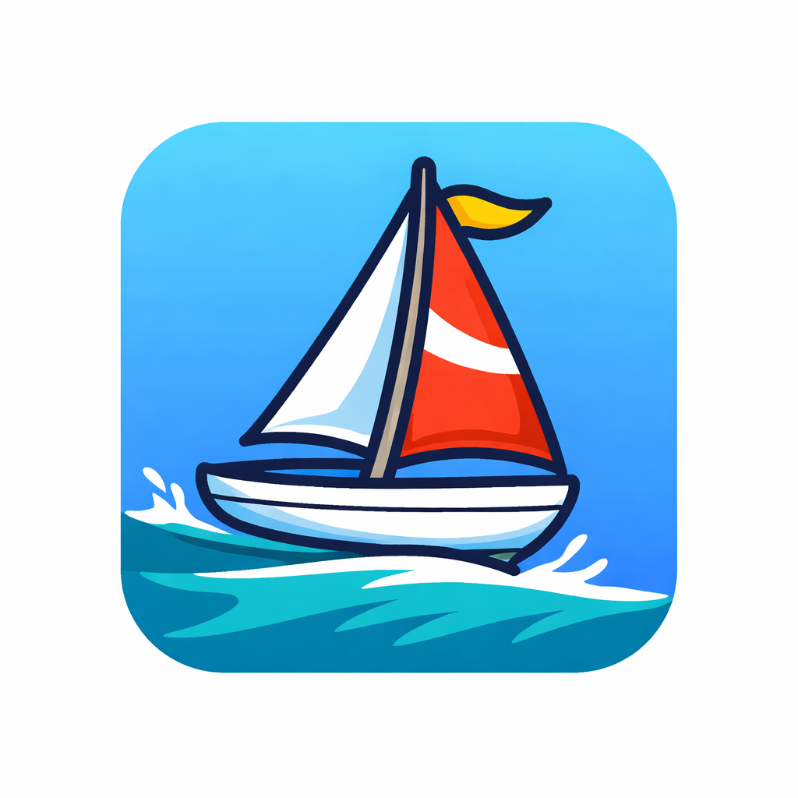

A / D or ← / →: rudder left / right
W / S or ↑ / ↓: trim sail in / ease out
Space: tack assist
R: restart
You cannot sail directly into the wind. Build speed on a reach, then work upwind by tacking. Better sail trim gives more drive. Too much power increases heel and drag. Avoid islands unless you want a dramatic coconut-confetti crash.